Em arte, uma instalação é uma obra tridimensional que utiliza um ambiente como elemento fundamental para a sua criação, onde o artista organiza uma variedade de elementos (objetos, som, vídeo, luz) para construir uma experiência que pode ser efêmera ou permanente, buscando não apenas um objeto a ser observado, mas um espaço imersivo onde o público é convidado a interagir e participar ativamente.
Um artista de instalação não se limita a um quadro em uma parede, mas cria um ambiente onde o público pode entrar, explorar e experimentar.
Isso pode incluir:
Transformar um espaço de galeria com objetos, luz e som.
Criar uma experiência sensorial que envolve não apenas a visão, mas também o tato, o olfato e a audição.
Projetar uma obra que se relaciona com o contexto social ou arquitetônico do local.
Exposição Mulheres / 2007
Convite da UDESC para participar da instação
Portas : Vinil adesivo colorido, tecido de algodão, pigmento natural, carvão, fotografias e objetos
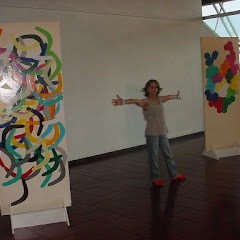 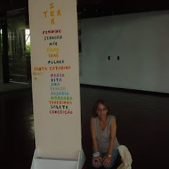 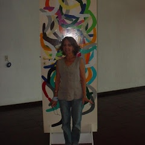
 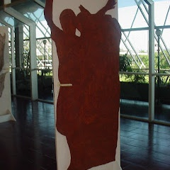
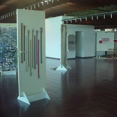
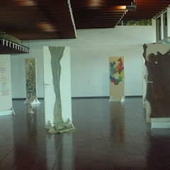
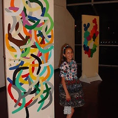
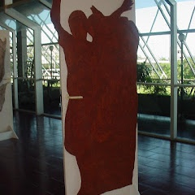
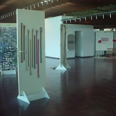
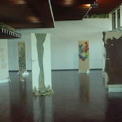
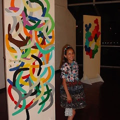
 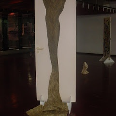
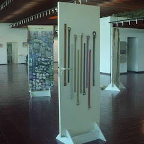
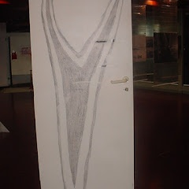
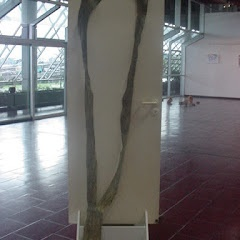
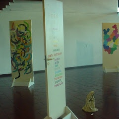
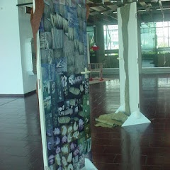
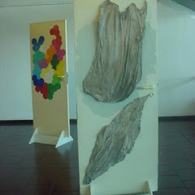
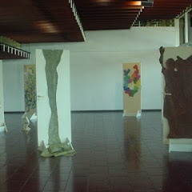
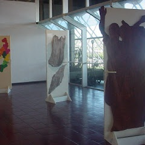
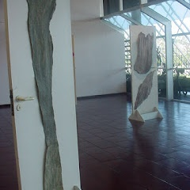
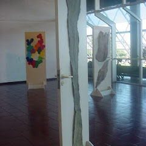
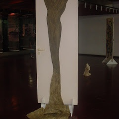
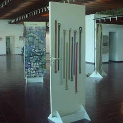
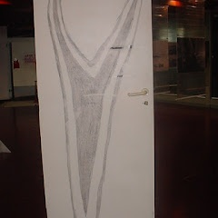
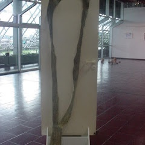
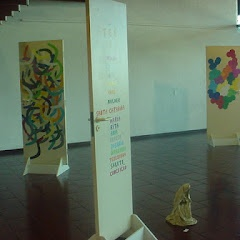
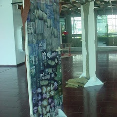
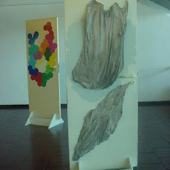
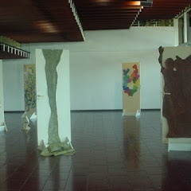
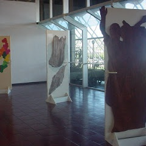
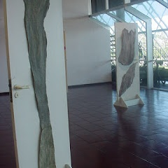
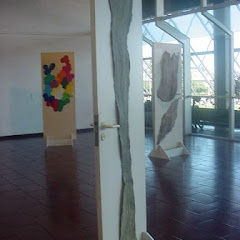


Madona
Arame, tecido de algodão e pigmento natural
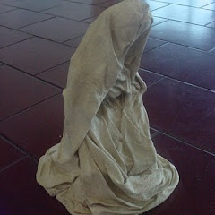 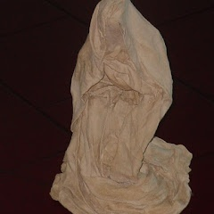
 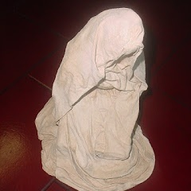
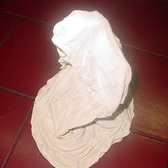
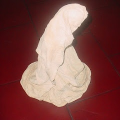
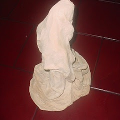
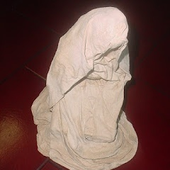
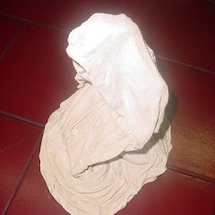
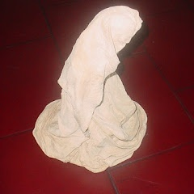
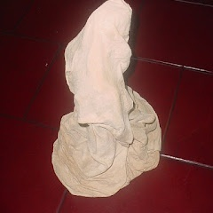
Balanço
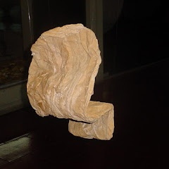 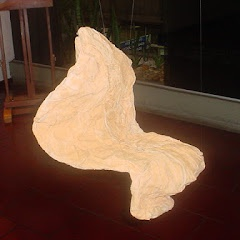 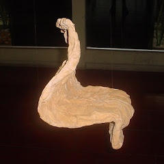 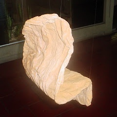 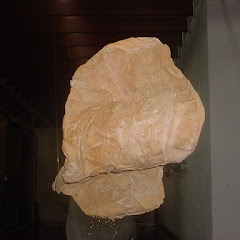
Tocante / 2002
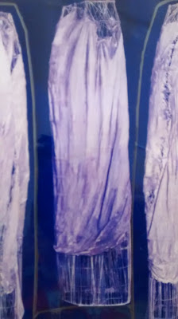 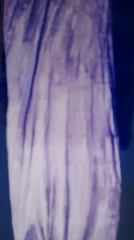 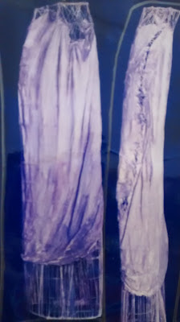 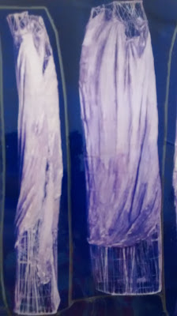
Arames e papel coloridos / 2002
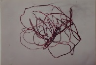 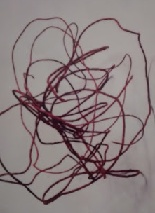
Arames e plastico / 2002
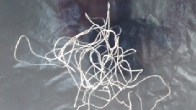
Bagagens / 2001
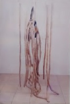